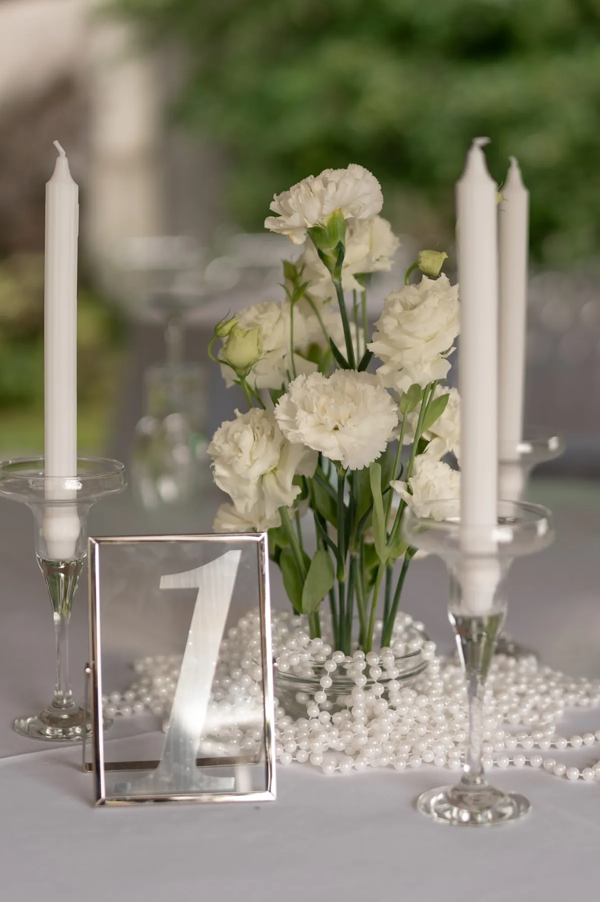
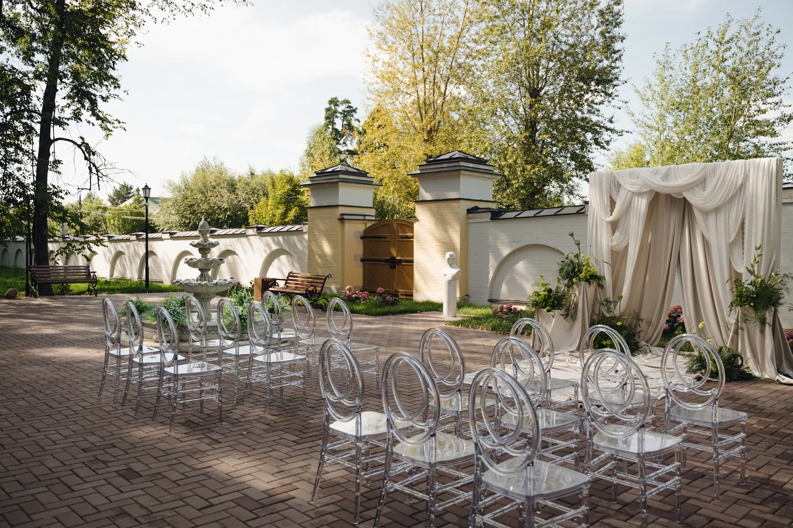
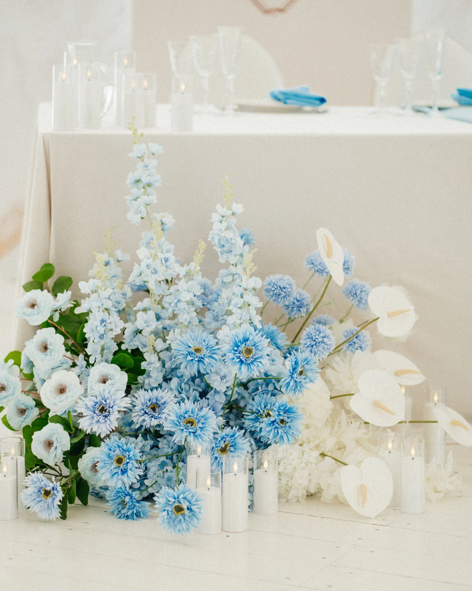
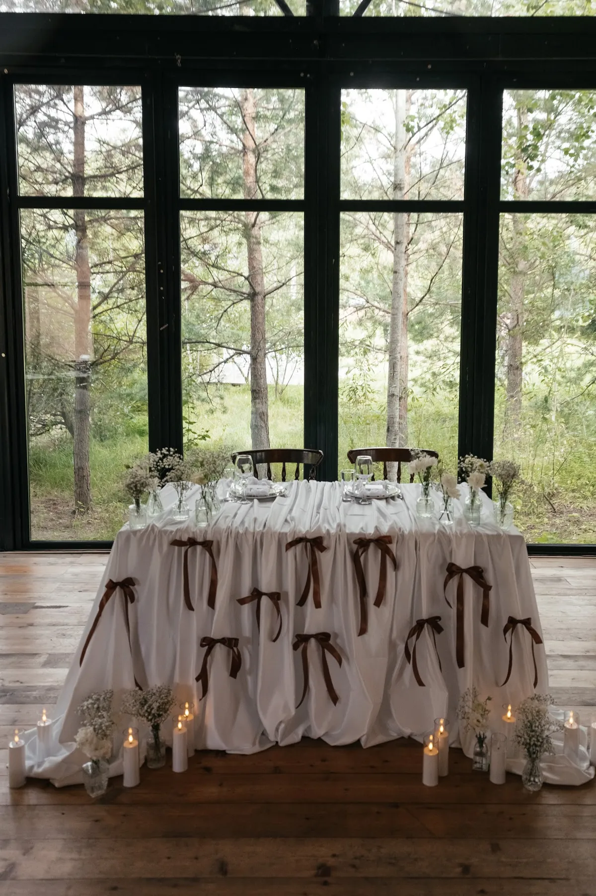

Большую часть свадебного декора не нужно покупать: арки, подставки, вазы и подсвечники используются один вечер, и их выгоднее взять в аренду. А вот цветы и идея всегда делаются под вашу свадьбу. Рассказываем, где проходит граница и как не переплатить.
Что обычно берут в аренду
- Конструкции — арки, каркасы для фотозон, подставки под композиции.
- Предметы — вазы, подсвечники, мольберты, номера столов, рамки.
- Текстиль — скатерти, дорожки, драпировка.
- Мебель — стулья для церемонии, столы, диваны для лаунж-зоны.
Всё это возвращается после свадьбы, поэтому стоит дешевле покупки — и не нужно думать, куда девать арку на следующий день.


Что делается только под вас
Живые цветы — расходный материал: композиции собирают под конкретную дату и палитру. Под заказ делают и всё уникальное: нестандартные инсталляции, надписи, полиграфию с вашими именами. Идеальный вариант — арендная основа (каркас арки, вазы, подсвечники) плюс свежая флористика и детали под вашу концепцию.


Из чего складывается стоимость
Помимо самой аренды в смету входят доставка, монтаж и демонтаж. Иногда площадка разрешает заезд только в определённые часы — это влияет на количество людей в команде монтажа. Уточняйте также, кто отвечает за предмет, если его повредят гости.
Совет: сравнивайте не цену отдельной вазы, а итоговую смету «под ключ» — с доставкой, монтажом и вывозом.
Как заказать
Мы оформляем свадьбы в Москве и Подмосковье и сами подбираем, что выгоднее взять в аренду, а что сделать под вашу концепцию. Расскажите о дате и площадке — посчитаем смету.
Частые вопросы
Можно ли взять в аренду только арку?
Обычно да, но чаще арку берут вместе с флористикой и монтажом — так она выглядит законченной.
Входит ли доставка и монтаж в аренду?
Как правило, считаются отдельно. Смотрите итоговую смету с доставкой, монтажом и демонтажем.
Что выгоднее: купить декор или арендовать?
Для свадьбы почти всегда выгоднее аренда: предметы нужны на один вечер, а покупка, хранение и вывоз обходятся дороже.